Access Guide
Room Guide
〒299-1621 千葉県富津市竹岡208-47
208-47 Takeoka, Futtsu-shi, Chiba 299-1621
〒299-1621 千葉縣富津市竹岡208-47
〒299-1621 지바현 훗쓰시 다케오카 208-47
Google マップで開く Open in Google Maps 開啟 Google 地圖 Google 지도에서 열기
・東京駅からお車で約90分
GoogleMapにて道案内をご覧いただけます。
・About 90 mins by car from Tokyo Station
You can view directions on Google Maps below.
・從東京站開車前往約 90 分鐘
點擊下方按鈕即可查看 Google Maps 路線導覽。
・도쿄역에서 차로 약 90분
아래 버튼을 누르시면 Google 지도에서 길 안내를 확인하실 수 있습니다.
当施設の外観はこちらです。
Here is the building exterior.
這是本建築的外觀。
숙소 외관입니다.
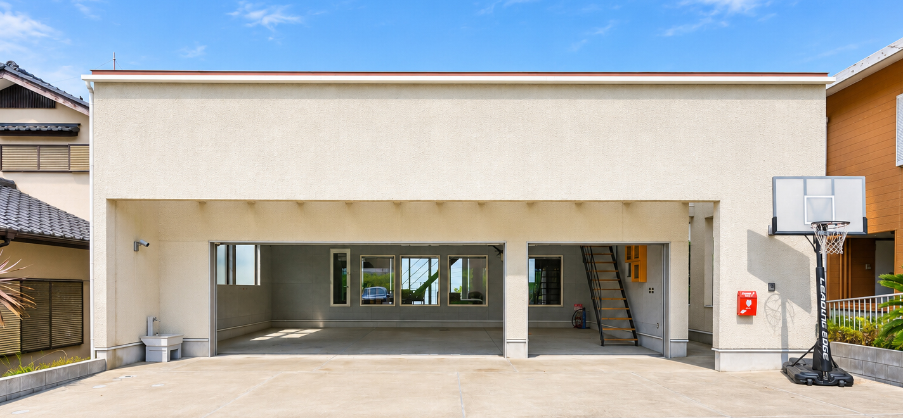
チェックイン： 16:00 ～ 21:00
事前にご案内しているゲスト情報入力フォームはご入力済みでしょうか？再度ご入力済みかご確認をお願いいたします。
Check-in: 4:00 PM - 9:00 PM
Have you already filled out the guest information form provided in advance? Please confirm if it has been completed.
入住時間： 16:00 ～ 21:00
請問您是否已填寫事先發送的住客資料表？請再次確認是否已完成填寫。
체크인: 16:00 ～ 21:00
사전에 안내해 드린 게스트 정보 입력 폼을 작성하셨나요? 다시 한 번 작성 여부를 확인해 주시기 바랍니다.
🔑 解錠方法 (Auto Lock)
🔑 How to Unlock (Auto Lock)
🔑 開鎖方式（Auto Lock 電子密碼鎖）
🔑 잠금 해제 방법 (Auto Lock)
玄関ドアのテンキーに触れて画面を起動し、暗証番号 61626 を入力して解錠してください。
※オートロックのため、ドアが閉まると自動的に施錠されます。外出時は暗証番号をお忘れにならないようご注意ください。
Touch the keypad on the front door to wake it up, then enter the passcode 61626 to unlock.
* This is an auto-lock door and will lock automatically when closed. Please make sure to remember the passcode when stepping outside.
輕觸大門電子鎖面板喚醒螢幕後，輸入密碼 61626 即可開鎖入內。
※ 本門鎖為自動上鎖（Auto Lock），關門後會自動上鎖，外出時請務必記住密碼以免反鎖。
현관문 키패드를 터치하여 화면을 켠 후, 비밀번호 61626 를 입력하면 잠금이 해제됩니다.
※ 오토락 기능이 있어 문이 닫히면 자동으로 잠깁니다. 외출 시 비밀번호를 잊지 않도록 주의해 주세요.
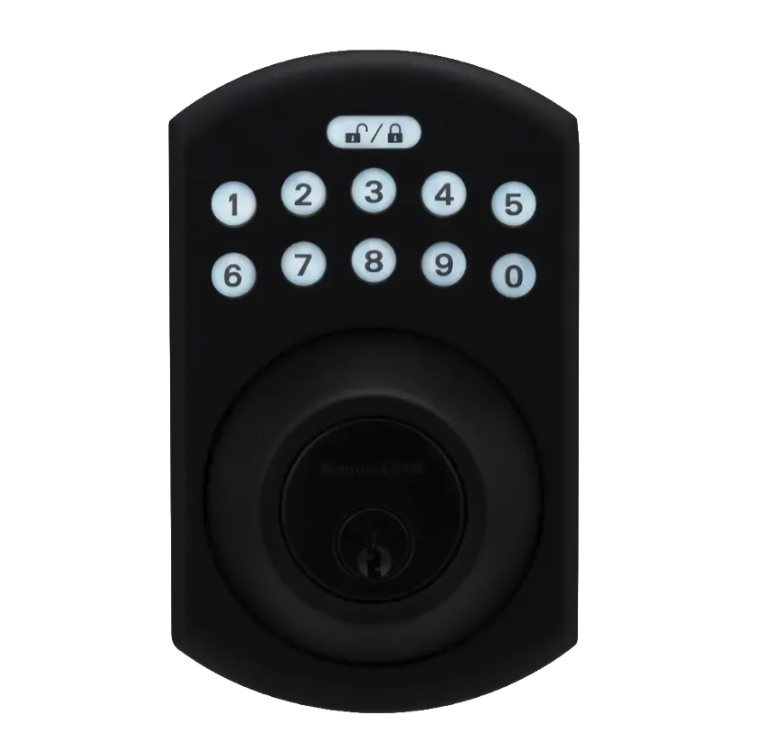
チェックアウト： 10:00 まで
チェックアウト時間を過ぎてのご退室には、3万円の超過料金をご請求させていただくことがございます。
お忘れ物のないようご確認の上、ドアが確実に閉まったことを確認してご退出ください（オートロック）。
Check-out: 10:00 AM
A late check-out fee of 30,000 yen may be applied for staying beyond the designated check-out time.
Please make sure you have all your belongings and confirm the door closes securely behind you (auto-lock).
退房時間： 10:00 前
若超過退房時間退房，可能需支付 30,000 日圓的額外費用。
離開前請確認沒有遺留物品，並確認大門已確實關上（自動上鎖）。
체크아웃: 10:00 까지
체크아웃 시간을 초과할 경우 3만 엔의 추가 요금이 청구될 수 있습니다.
두고 가시는 물건이 없는지 확인하신 후, 문이 확실히 닫혔는지 확인하고 퇴실해 주세요(오토락).
ペットのプールへの立ち入りは禁止です。
違反された場合、清掃費として100,000円を請求いたします。ご理解とご協力をお願いいたします。
Pets are strictly prohibited from entering the pool.
If violated, a cleaning fee of 100,000 JPY will be charged. Thank you for your understanding and cooperation.
嚴禁寵物進入泳池。
若違反規定，將收取 100,000 日圓作為清潔費用。感謝您的理解與配合。
반려동물의 수영장 출입은 엄격히 금지되어 있습니다.
위반 시 청소비로 100,000엔이 청구됩니다. 이해와 협조를 부탁드립니다.
靴は玄関で脱ぎ、必要に応じてスリッパをご利用ください。
Please take off your shoes at the entrance and feel free to use slippers if needed.
請在玄關脫鞋，如有需要可使用室內拖鞋。
신발은 현관에서 벗고 필요 시 슬리퍼를 이용해 주세요.
💡 電源OFF / Turn Off Power外出時は、エアコン、ルームライトなどその他家電製品の電源はお切りください。
Please turn off the air conditioner, room lights, and other electronic devices when leaving.
外出時請務必關閉冷氣、電燈等所有電器電源。
외출 시 에어컨, 조명 등 가전제품의 전원을 꺼주세요.
⚠️ 破損・賠償 / Damage Compensation建物や設備、備品を破損した場合、修繕費と営業補償費をご負担頂きます。
In the event of damage to the property or facilities, you will be responsible for repair and compensation costs.
若損壞建築、設備或物品，須承擔修繕費與營業損失賠償。
건물이나 설비, 비품을 손상시킨 경우 수리비 및 영업 보상비를 부담하셔야 합니다.
🍽️ 使用後の食器について / Used Dishes使用した食器や調理器具類は必ず洗ってください。
Please make sure to wash all used dishes and cooking utensils.
使用過的餐具及廚具請務必清洗乾淨。
사용하신 식기 및 조리도구는 반드시 설거지해 주세요.
🔥 火の元には注意を！ / Fire Safety火気を使用する際は、十分に注意し正しくご利用ください。万が一、火災などの緊急事態が発生した場合は、すぐにご連絡いただき、指示に従ってください。
Please be extremely careful when using fire or heating sources. In the unlikely event of an emergency such as a fire, please contact us immediately and follow instructions.
使用火源時請格外小心並正確使用。萬一發生火災等緊急狀況，請立即與我們聯絡並遵循指示。
화기를 사용할 때는 충분히 주의하여 올바르게 이용해 주십시오. 만일 화재 등 긴급 상황이 발생한 경우 즉시 연락해 주시고 지시에 따라 주시기 바랍니다.
📦 お忘れ物 / Forgotten Belongingsお忘れ物を後日送付する際は、送料はご負担いただきます。
If you request left-behind items to be mailed to you at a later date, shipping costs will be charged to you.
遺留物品如需於日後寄還，郵資需由住客自行負擔。
두고 가신 물건을 추후 발송해 드릴 경우 배송비는 고객님 부담입니다.
お手洗いは座ってご利用ください。
Please sit down to use the toilet.
使用馬桶時請坐著使用。
양변기는 앉아서 이용해 주시기 바랍니다.
🧻 トイレットペーパー / Toilet Paperトイレットペーパーはゴミ箱に捨てず、直接便器に入れて流してください。その他の異物は流さないでください。
Do not throw the toilet paper away in the trash bin. Please place the toilet paper in the toilet and flush. Please do not flush anything other than toilet paper.
衛生紙請直接投入馬桶沖掉，切勿扔進垃圾桶。請勿將衛生紙以外的異物丟入馬桶。
화장지는 휴지통에 버리지 마시고 변기에 넣고 물을 내려주세요. 화장지 이외의 이물질은 넣지 마십시오.
💧 水の流し方 / Flushingレバーを押すと水が流れます。
Push the lever down to flush the toilet.
按下沖水槓桿即可沖水。
레버를 누르면 물이 내려갑니다.
ゴミは以下の分別にご協力ください：
Please separate your trash into the following categories:
請將垃圾協助分類為以下類別：
쓰레기는 다음 카테고리로 분리해 주세요:
おまとめいただいたゴミは室内に置いていただくだけでOKです。
Once separated, simply leave the sorted trash inside the room.
分類好的垃圾請直接放在室內即可。
분리하신 쓰레기는 객실 내에 두시면 됩니다.
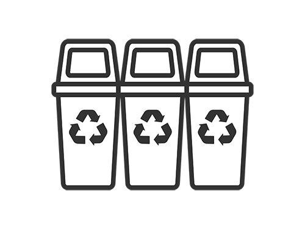
緊急時のご連絡について
Emergency Contact Information
緊急情況聯絡方式
비상 시 연락 안내
予約サイトのメッセージのほか、緊急時は下記までお電話ください。
For urgent matters, please call the number below in addition to booking site messages.
除了預訂網站訊息外，如有緊急狀況請撥打以下電話：
예약 사이트 메시지 외에도 긴급 시 아래로 연락해 주세요.
TEL：080-4862-7949（10:00 - 19:00）
📞 Call: 080-4862-7949室内および敷地内は完全禁煙です。
加熱式タバコ・電子タバコを含め、室内での喫煙は固くお断りいたします。
万が一、室内での喫煙が発覚した場合は、清掃費および営業補償料として違約金を請求させていただきます。
Smoking is strictly prohibited inside the room and on the premises.
This includes e-cigarettes and heated tobacco products.
If smoking is detected, a penalty fee for special cleaning and lost business compensation will be charged.
室內及建築敷地內全面禁止吸菸。
包含加熱菸與電子菸在內，嚴禁在室內吸菸。
若發現室內有吸菸行為，將收取特殊清潔費及營業損失補償違約金。
실내 및 부지 내는 전구역 금연입니다.
전자담배 및 궐련형 담배를 포함하여 실내 흡연은 엄격히 금지되어 있습니다.
만일 실내 흡연이 적발될 경우 청소비 및 영업 보상비로 위약금이 청구됩니다.
SSID: IPC_guest
Password: icpresort_2607
ご覧になりたい家電を選択してください：
Please select the appliance you want to view:
請選擇欲查看的家電設備：
확인할 가전제품을 선택해 주세요:
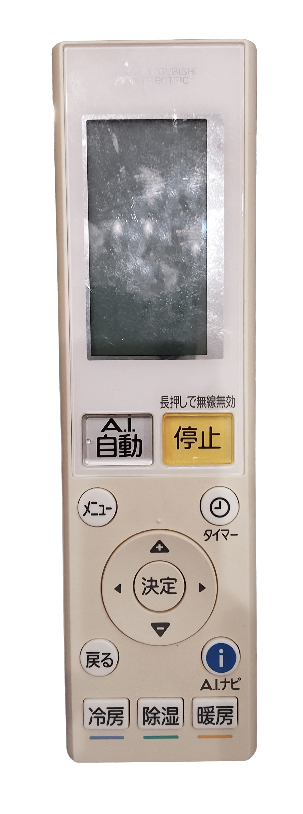
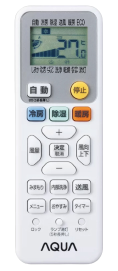
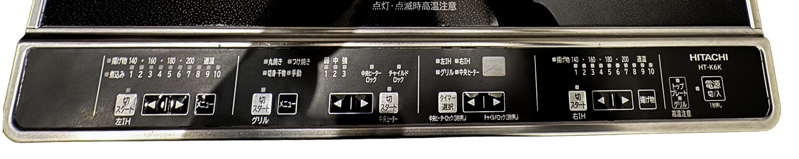
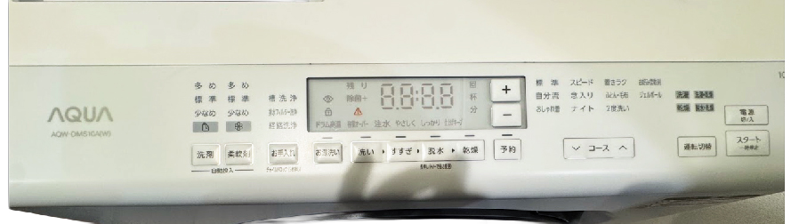
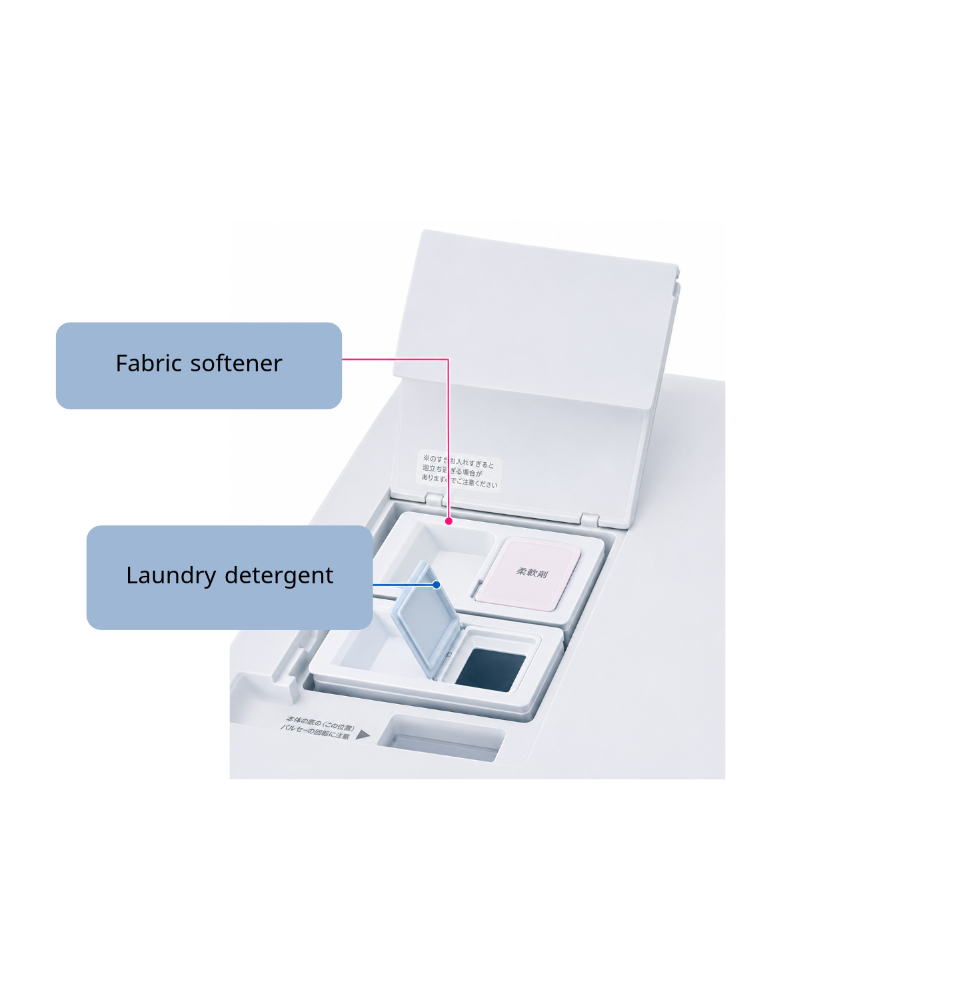
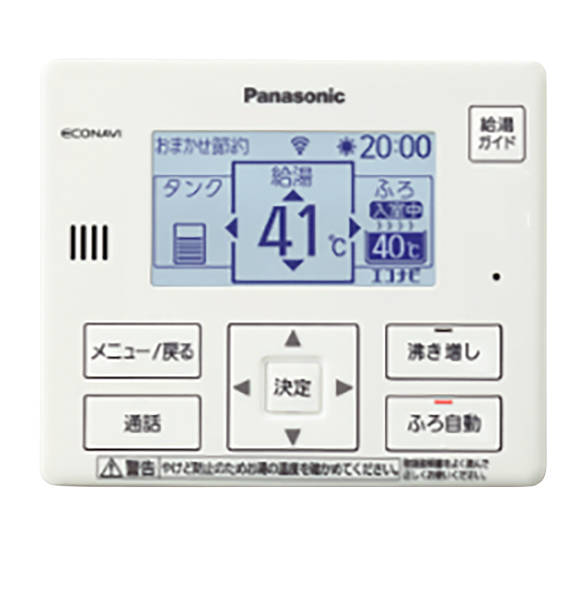
各配信サービスをご利用いただけます。ご視聴につきましては、お客様ご自身のアカウントにてログインをお願いいたします。
Streaming services are available. Please log in with your own account for viewing.
可使用各類影音串流服務。欲觀看節目，請使用您個人的帳號進行登入。
각 스트리밍 서비스를 이용하실 수 있습니다. 시청 시 고객님의 개인 계정으로 로그인해 주시기 바랍니다.
リビング Living Room 客廳 거실
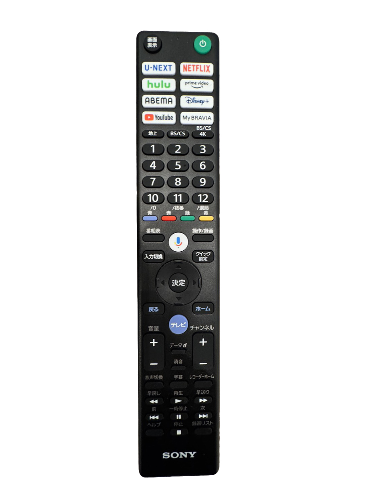
浴室 Bathroom 浴室 욕실
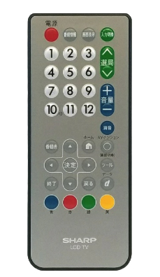
近隣のコンビニ、スーパー、おすすめスポットなどの詳細情報は、下記ボタンよりご覧ください。
Please click the button below to open our online guide map for nearby stores and spots.
周邊便利商店、超市及推薦景點等詳細資訊，請點擊下方按鈕前往查看。
주변 편의점, 마트, 추천 장소 등 상세 정보는 아래 버튼을 클릭하여 확인해 주세요.
🗺️ 周辺ガイドマップを開く 🗺️ Open Nearby Guide Map 🗺️ 開啟周邊地圖 🗺️ 주변 가이드 맵 열기ご宿泊ありがとうございます！
Thank you for staying with us!
非常感謝您的入住！
숙박해 주셔서 감사합니다!
弊社ニューオ株式会社では、民泊や時間貸しのレンタルスペースを運営しております。
NEWO Inc. operates vacation rentals and rental spaces.
NEWO 株式會社營運各類民宿與出租空間。
주식회사 NEWO는 민박 및 렌탈 공간을 운영하고 있습니다.
X (Twitter) @newo_inc Instagram @yukatsu_official_ HPはこちら Official Website 官方網站 공식 홈페이지